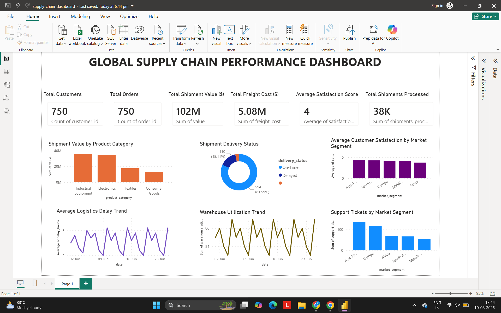
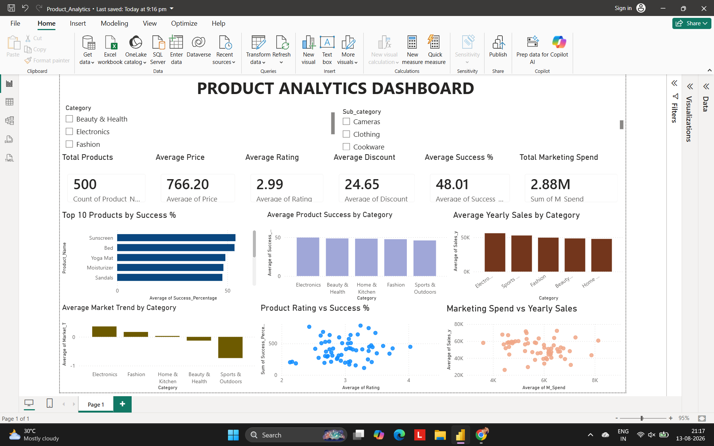

01
01
HR Analytics Dashboard
An interactive HR dashboard designed to analyze employee attrition, workforce characteristics and key HR performance indicators.
View Case Study →DATA ANALYST • POWER BI • SQL
B.Tech Computer Science student specializing in Artificial Intelligence and Data Science, with hands-on experience in Power BI, SQL, Excel, Power Query and DAX. I build interactive dashboards and transform raw data into clear, actionable business insights.
01 — ABOUT
I'm LIKHITHA KONDA , a Computer Science student specializing in Artificial Intelligence and Data Science at KIET, JNTUK.
My focus is on data analytics and business intelligence. I enjoy working with raw datasets, cleaning and transforming information, creating analytical measures and building dashboards that make complex information easier to understand.
Through project-based learning, I have worked across HR analytics, sales analytics, supply chain analytics, product analytics and SQL database analysis.
02 — SKILLS
Power BI Desktop, Power Query, Data Modeling, DAX, KPI Cards, Slicers, Filters and Interactive Dashboards.
SELECT, WHERE, GROUP BY, ORDER BY, DISTINCT, LIMIT, Aggregate Functions and JOINs.
Data cleaning, formulas, functions, Pivot Tables, charts and data analysis.
Python fundamentals, Pandas, NumPy and Matplotlib for data analysis.
Data cleaning, transformation, preparation and modeling using Power Query.
KPI analysis, exploratory analysis, visualization and business insights.
03 — PROJECTS
A collection of hands-on analytics projects built using Power BI, SQL, Excel and data transformation techniques.
01
An interactive HR dashboard designed to analyze employee attrition, workforce characteristics and key HR performance indicators.
View Case Study →
02A supply chain dashboard analyzing customer activity, orders, shipment performance, freight costs and customer satisfaction.
View Case Study →
03Product performance analysis covering sales, pricing, discounts, ratings, marketing spend and yearly trends.
View Case Study → 04
04
A sales and profitability dashboard analyzing products, categories, regions, sales trends and overall business performance.
View Case Study → 05
05
An interactive dashboard analyzing student performance and academic indicators using KPIs and Power BI visualizations.
View Case Study → 06
06
A relational employee database demonstrating SQL queries, filtering, aggregation, joins, sorting and structured data analysis.
View Case Study →04 — EDUCATION
BACHELOR OF TECHNOLOGY
Kakinada Institute of Engineering and Technology (KIET), JNTUK
TRAINING & PROGRAMS
05 — CONTACT
I'm currently open to Data Analyst, Power BI Analyst, Business Intelligence and analytics internship opportunities.